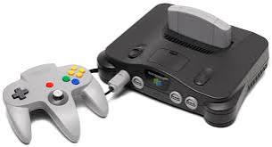
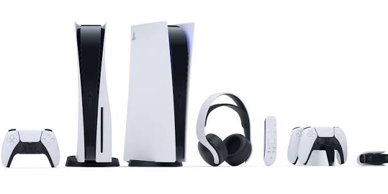

Dados e Impacto dos Videogames
Estatísticas globais, vendas e o impacto cultural das principais consolas da história.

Atari 2600
Lançado em 1977, o Atari 2600 superou os 30 milhões de unidades vendidas no mundo. Foi a consola responsável por introduzir os cartuchos trocáveis e popularizar a indústria de videojogos em massa nos lares familiares.

Super Nintendo (SNES)
Com mais de 49 milhões de unidades comercializadas na década de 1990, o SNES dominou a era dos 16-bits. O seu jogo mais vendido, Super Mario World, sozinho ultrapassou a marca de 20 milhões de cópias.

PlayStation 1
Lançado pela Sony em 1994, tornou-se a primeira consola doméstica da história a ultrapassar os 100 milhões de unidades vendidas (alcançando 102,4 milhões). Revolucionou o setor com o formato CD-ROM e gráficos 3D.

Nintendo 64
Lançado em 1996, registou cerca de 32,9 milhões de unidades vendidas. Inovou o mercado com o comando analógico e o formato de exploração tridimensional, definindo novos padrões para os jogos modernos.

PlayStation 2
É a consola mais vendida de todos os tempos, acumulando mais de 155 milhões de unidades pelo mundo. A inclusão do leitor de DVD e a sua biblioteca com mais de 4.000 jogos impulsionaram o seu sucesso histórico.

PlayStation 5 e a Era Atual
Ultrapassando os 60 milhões de unidades vendidas, o PS5 simboliza a nova geração tecnológica. Atualmente, a indústria global de jogos gera mais de 180 mil milhões de dólares anualmente, superando o cinema e a música juntos.